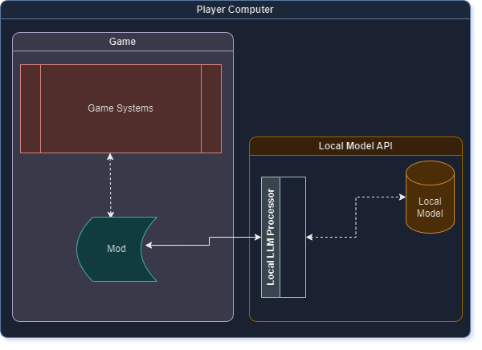

LLM Modding 201

Lokale, Online- oder Service-Modelle?
Wenn es um Modding mit LLMs geht, haben Sie mehrere Optionen. Obwohl diese Einteilung für einige nicht zufriedenstellend sein mag, möchte ich sie so klassifizieren, und hier sind einige Details zu jeder:
- Lokale LLM-Modelle: Dies sind Modelle, die auf handelsüblichen PCs ausgeführt werden, die keine Internetverbindung benötigen, und die gesamte Berechnung erfolgt auf dem Consumer-Laufwerk.
- Online-LLM-Modelle: Dies sind Modelle, die Sie online ausführen müssen, entweder weil Sie sie aufgrund von Hardware- oder rechtlichen Einschränkungen nicht auf Consumer-Hardware ausführen können.
- Service-LLM-Modelle: Dies sind Modelle, die auf bestimmte Bereiche spezialisiert sind und eine API für Entwickler bereitstellen, die einige mühsame Aspekte der LLM-Systeme ausklammert (Beispiel: Inworld KI).
Möglicherweise haben Sie auch einige Modelle gefunden, die eine Mischung aus diesen Kategorien sind, aber es gibt keine Notwendigkeit, eine separate Kategorie für sie zu erstellen. Im folgenden Abschnitt werde ich versuchen, alle diese Kategorienmodelle nach bestem Wissen und Gewissen zu erklären, indem ich die Vor- und Nachteile jeder Kategorie aufzeige.
Über lokale Modelle
Systemarchitekturdiagramm

Vorteile:
Lokale Modelle sind insofern großartig, als sie normalerweise keine ständige Internetverbindung benötigen. Dies ist vorteilhaft für Benutzer, die sich um ihre Privatsphäre sorgen. Darüber hinaus können die meisten Modelle ohne Einschränkungen ausgeführt werden, was weniger zensierte Modelle für Mods ermöglicht - was je nach Art des Mod-Konzepts, das Sie im Kopf haben (zum Beispiel wird Gewalt von vielen KI-Modellen nicht genehmigt, es sei denn, Sie entfernen einige Schutzvorrichtungen), großartig sein kann. Sie sind auch kostenlos, da alles lokal passiert, so dass die Benutzer nichts bezahlen müssen.
Nachteile:
Oft kommen diese lokalen Modelle in zwei Qualitäten - Modelle mit großen Parametern und Modelle mit kleinen Parametern. Modelle mit großen Parametern erfordern oft sehr hochwertige Hardware, um ausgeführt zu werden (wie mindestens 100sGB RAM und dergleichen), und sie nehmen auch einen sehr großen Speicherplatz auf der Hardware ein. Dies ist, wie Sie erwarten können, im Moment nicht für jeden Mod-Benutzer attraktiv, und Sie würden nur einen Bruchteil der Spielergemeinschaft als Mod-Benutzer ansprechen. Für Modelle mit kleinen Parametern hingegen benötigen sie in den meisten Fällen weniger leistungsfähige Maschinen. Sie benötigen jedoch immer noch etwa 16GB RAM, eine gute GPU und ziemlich viel Speicherplatz. Leider ist die Qualität der Antworten von diesen kleinen Parametermodellen auch sehr fragwürdig (zumindest nach meinen Beobachtungen sind sie nicht gut). Sie können GPT-Q und GGML-Versionen der Modelle finden, die je nach Verbraucherspezifikationen helfen können, aber dennoch benötigen Sie in jeder Kategorie gute Hardware. GPT-Q ist für CUDA-Inferenzmodelle (im Grunde GPU) und GGML ist für CPU ausgelegt. Darüber hinaus gibt es Modelle, die auf Consumer-Hardware laufen können, wo es 4GB VRAM oder 16GB RAM benötigt, und Sie könnten sagen "Großartig, also funktioniert es", aber Sie würden die Tatsache vergessen, dass das Ausführen der Modelle nicht die einzige Anforderung ist. Wir müssen die Modelle und das Spiel gleichzeitig ausführen, und dies ohne Beeinträchtigung der Spiel-Performance (aufgrund des begrenzten RAM/VRAM) erfordert hochwertige Hardware, die die meisten Leute nicht besitzen. Außerdem erfordert das Einrichten dieser lokalen Modelle oft das Installieren einer Menge zusätzlicher Software auf der Hardware des Spielers, was die Schritte erhöht, die sie abschließen müssen, bevor sie ihren Mod genießen können. Da die meisten Mod-Nutzer keine Software-Entwickler sein werden, werden sie Schwierigkeiten haben, ihre Umgebungen so einzurichten, wie Sie es können, was die Anzahl der Spieler, die Ihren Mod genießen können, verringern wird. Darüber hinaus fehlen bei allen lokalen Modellen die Nebenleistungen, die Online- oder Service-Modelle bieten, wie TTS/STT oder Action-Systeme, Stimmen usw. Sie müssen das LLM-Prompting für maximale Effizienz erlernen, damit Ihr Mod das lokale Modell in dieser Struktur aufruft, um die besten Antworten zu erhalten.
Über Online-Modelle
Systemarchitekturdiagramm

Vorteile:
Online-Modelle können zwei Untergruppen haben: einsatzbereite Online-Modelle, wie die OpenAI-API, oder benutzerdefinierte Online-Modelle, wie das Ausführen lokaler Modelle auf Ihrem Cloud-Anbieter und das Bereitstellen dieser API für Modder. Beide Optionen haben einen gemeinsamen Vorteil: Sie nehmen die Ausführungslast von der Consumer-Hardware. Das bedeutet, dass sie, solange sie das Mod spielen können, auch in der Lage sein sollten, LLMs zu verwenden. Außerdem sind sie für die Benutzer oft einfacher einzurichten, weil Sie als Mod-Ersteller einfach die API aufrufen und sie nichts extra tun müssen. Aus Update-Perspektive ist es auch einfacher, in dem Sinne, dass Sie keine GBs an Daten als Update pushen müssen, wenn eine bessere Version veröffentlicht wird; Sie könnten einfach auf dem Server aktualisieren oder, wenn Sie ein einsatzbereites Modell verwenden, würde es automatisch aktualisiert.
Nachteile:
Der Benutzer benötigt eine Internetverbindung, um es zu verwenden - das bedeutet, dass eine ständige Internetverbindung ein Muss ist. Für einsatzbereite Online-Modelle sind sie oft nicht kostenlos und erfordern ein Abonnement. Mit anderen Worten, Benutzer müssen für die Nutzung bezahlen, und es erfordert die Anmeldung auf einer Seite und das Durchführen einiger zusätzlicher Arbeiten auf ihrer Benutzeroberfläche, was von vielen Benutzern nicht bevorzugt wird, weil es ein zusätzlicher Schritt ist. Für benutzerdefinierte Online-Modelle müssen Sie (als Mod-Entwickler) eine VM von einem Cloud-Anbieter mit sehr leistungsfähiger Hardware mieten und alle oben erklärten Schritte für lokale Modelle befolgen. Zusätzlich müssen Sie Ihre eigene API-Schnittstelle schreiben, damit Sie eingehende Anrufe bearbeiten und sie an Ihren lokalen Modellprozessor weiterleiten und die Antwort an den Anrufer zurücksenden können. Wie Sie vielleicht erraten können, ist dies für Mod-Ersteller wirtschaftlich nicht machbar, da der Betrieb eines solchen Servers viel Geld kosten kann. Außerdem müssen Sie jetzt im Grunde genommen lernen, wie man eine performante Web-API schreibt - was eher eine berufliche Fähigkeit als eine Hobby-Modding-Fähigkeit ist. Außerdem müssen Sie immer noch das LLM-Prompting für maximale Effizienz erlernen, damit Ihr Mod das lokale Modell in dieser Struktur aufruft, um die besten Antworten zu erhalten. Ähnlich wie bei lokalen Modellen kommen die meisten Online-Modelle nicht mit zusätzlichen Funktionen wie TTS/SST und Emotionen etc.
Über Service-Modelle
Systemarchitekturdiagramm

Vorteile:
Service-Modelle sind oft spezialisiert auf die Erstellung von Charakteren für Gespräche, was bedeutet, dass Sie wenig bis keine Prompting-Fähigkeiten benötigen, um diese Dienste zu nutzen. Dies, obwohl es trivial klingt, entfernt eine enorme Arbeitsbelastung von den Schultern der Entwickler. Ähnlich wie bei Online-Modellen eliminieren sie auch umständliche Installationsschritte, da keine lokale Installation für die Benutzer erforderlich ist. Die gesamte Architektur wird für die Entwickler einfacher, da es nur ein weiterer API-Aufruf ist. Außerdem bieten diese Dienste, da sie von professionellen Unternehmen betrieben werden, oft ihr eigenes SDK, das die groben Implementierungsdetails je nach Anwendungsfall abstrahiert. Darüber hinaus entfernen ähnlich wie Online-Modelle Service-Modelle die Ausführungsbelastung von der Hardware des Spielers, so dass jeder LLMs nutzen kann, unabhängig von der Leistungsfähigkeit seiner Hardware. Während nicht alle Service-Modelle dies anbieten, bieten Dienste wie Inworld andere Funktionen wie TTS/SST, Elevenlabs-Integration, Emotionen, Speicher und mehr aus der Box an, was die Fähigkeiten des Mods mit LLM erheblich bereichert. Aufgrund der Natur von Service-Modellen sind sie im Vergleich zu Online-Modellen kostenbewusster, da sie Endverbraucher als Zielgruppe betrachten, im Gegensatz zu Online-Modellen, bei denen die Zielgruppe Entwickler sind. Der Anmelde-, Zahlungs- und Einrichtungsprozess von Service-Modellen ist oft mit einem kundenorientierten Ansatz gestaltet, was die Benutzerakzeptanz aufgrund ihrer vertrauten UI/UX-Seiten erleichtert. Service-Modelle erfordern keinerlei Anstrengung von Mod-Entwicklern, da sie keine Server einrichten oder für die Infrastruktur bezahlen müssen, sondern einfach die Service-Endpunkte nutzen, was die Entwicklung für Mod-Ersteller erheblich erleichtert.
Nachteile:
Ähnlich wie bei Online-Modellen müssen Benutzer, um Service-Modelle zu nutzen, mit dem Internet verbunden sein, was von einigen Benutzern nicht bevorzugt wird. Service-Modelle erfordern oft bezahlte Abonnements, obwohl Dienste wie Inworld kostenlose Ebenen für die Mehrheit der Anwendungsfälle anbieten. Unabhängig davon erfordern diese Systeme eine Anmeldung, was ein zusätzlicher Schritt für die Benutzer ist.